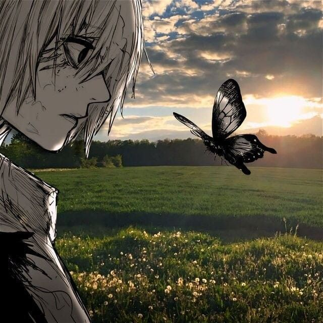

лето 2025
pwn, systems
& reverse engineering
Интересуюсь pwn и реверсом. Сейчас пишу проекты на C++

информационная безопасность
Мой олимпиадный путь
осень 2025
Попал на кружок Т-Образования
февраль 2026
Стал призёром регионального этапа ВсОШ по информационной безопасности
конец февраля 2026
Прошёл на заключительный этап ВсОШ по информационной безопасности
28 марта 2026
Стал призёром заключительного этапа ВсОШ по информационной безопасности
планы
бакалавриат
Планирую поступить в ВШЭ на бакалавриат по информационной безопасности
дальше